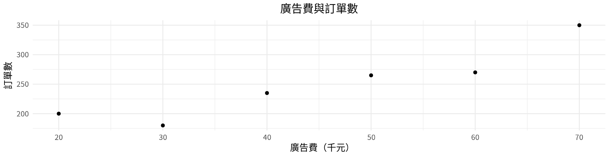
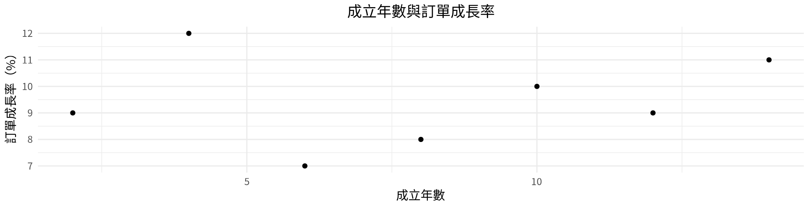
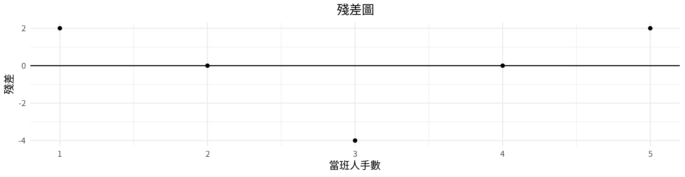

統計學
第10章：相關與迴歸
劉昱佑
實踐大學
2026-10-08
本章概覽
第10章討論相關與迴歸：判斷兩個變數是否線性相關、關係有多強，以及如何據以預測。
| Section | Topics |
|---|---|
| 10-1 | 散布圖；相關係數 r 及其性質；檢定 H_0: \rho = 0；相關與因果 |
| 10-2 | 迴歸線 y' = a + bx；最小平方法與殘差；邊際變化；外推；具影響力的點 |
本章概覽（續）
| Section | Topics |
|---|---|
| 10-3 | 變異的分解；殘差圖；r^2；s_{est}；預測區間 |
| 10-4 | 複迴歸；偏迴歸係數；R、F 檢定與調整後 R^2 |
本章學習目標
讀完本章後，你應該能夠
- 為一組有序配對繪製散布圖。
- 計算相關係數。
- 檢定假設 H_0: \rho = 0。
- 計算迴歸線的方程式。
- 計算判定係數。
- 計算估計標準誤。
- 求出預測區間。
- 熟悉複迴歸的概念。
本章要回答的四個問題
相關與迴歸分析屬於推論統計：它判斷兩個以上的數值變數之間是否存在關係，並描述這個關係。
本章的目的
- 兩個（以上）變數之間是否為線性相關？
- 若是，關係的強度如何？
- 存在哪一種類型的關係？
- 可以由這個關係做出什麼樣的預測？
Section 10-1: Scatter Plots and Correlation
自變數與依變數
在簡單相關與迴歸研究中，研究者針對兩個數值（量化）變數蒐集資料，以判斷兩者之間是否存在關係。
自變數與依變數
自變數是迴歸中可以被控制或操弄的變數，以 x 表示，也稱為解釋變數。
依變數是迴歸中無法被控制或操弄的變數，以 y 表示，也稱為反應變數。
x 與 y 的指定並非永遠明確。年齡可以合理地被視為影響血壓；但若研究夫與妻對同一議題的態度，研究者可以任意指定何者為自變數。
散布圖
散布圖
散布圖是由自變數 x 與依變數 y 所構成的有序配對 (x, y) 所繪成的圖形。
自變數 x 畫在橫軸，依變數 y 畫在縱軸。兩個變數的尺度可以不同；座標軸的範圍由資料的最小值與最大值決定。
關係的類型
研究者在散布圖中尋找各種形態（圖 10-1）。
四種形態
- 正線性關係：x 增加時 y 也增加；各點大致排成一條由左下往右上的直線。
- 負線性關係：x 增加時 y 減少；各點大致排成一條由左上往右下的直線。
- 曲線（非線性）關係：各點沿著一條曲線分布。
- 無關係：各點看不出任何直線或曲線的形態。
程序表：繪製散布圖
繪製散布圖
步驟 1 畫出並標示 x 軸與 y 軸。
步驟 2 將每一個點標在圖上。
步驟 3 判斷兩個變數之間存在哪一種關係（若有的話）。
Example 10-1
廣告費與訂單數
某跨境電商團隊記錄旗下六條產品線上個月的線上廣告費（千元新台幣）與收到的訂單數。請為這組資料繪製散布圖。
Ad spend, x 20 30 40 50 60 70
Orders, y 200 180 235 265 270 350（模擬資料）
回到 Example 10-4
Example 10-1
解題
步驟 1 — 畫出並標示座標軸；步驟 2 — 標出每一個點（圖 10-2）
步驟 3 廣告費與訂單數之間看起來存在正向關係。
Example 10-2
延遲天數與客戶評分
台中某貨運承攬業者檢視七筆晚於承諾日期才送達的出口訂單，記錄每筆貨物延遲的天數，以及客戶事後給的滿意度評分（滿分 100）。請為這組資料繪製散布圖。
Order A B C D E F G
Days late, x 1 2 3 4 5 6 7
Customer rating, y 94 84 86 80 78 68 70（模擬資料）
回到 Example 10-5
Example 10-2
Example 10-3
成立年數與訂單成長率
某公會想了解小型貿易公司成立的年數與去年訂單成長的快慢之間是否存在關係，隨機選取高雄七家會員公司。請為這組資料繪製散布圖。
Company A B C D E F G
Years in operation, x 2 4 6 8 10 12 14
Order growth, y (%) 9 12 7 8 10 9 11（模擬資料）
回到 Example 10-6
Example 10-3
解題
步驟 1 — 畫出並標示座標軸；步驟 2 — 標出每一個點（圖 10-4）

步驟 3 公司成立的年數與訂單成長率之間沒有明顯的正或負線性關係。
相關
統計學家以相關係數衡量兩個變數之間線性關係的強度。相關係數有好幾種。
母體與樣本相關係數
母體相關係數以希臘字母 \rho 表示，是使用母體中所有可能的資料配對 (x, y) 計算出來的相關。
由樣本資料計算出來的線性相關係數衡量兩個量化變數之間線性關係的強度與方向，樣本相關係數的符號為 r。
本節所談的相關係數稱為皮爾森積差相關係數（PPMC），以統計學家 Karl Pearson 命名。
r 的數值範圍
解讀 r 的數值（圖 10-5）
線性相關係數的範圍是 -1 到 +1。
- r 接近 +1：強的正線性關係。
- r 接近 -1：強的負線性關係。
- r 接近 0：沒有線性關係，或關係很弱。
r 等於或接近 0 只代表沒有線性關係；資料仍可能以其他非線性的方式相關。
線性相關係數的性質
五項性質
- 相關係數是無單位的測度。
- r 的值恆介於 -1 與 +1 之間，即 -1 \leq r \leq 1。
- 若 x 與 y 的值互換，r 的值不變。
- 若 x 與（或）y 換成不同的尺度，r 的值不變。
- r 對離群值敏感；資料中若有離群值，r 可能劇烈改變。
相關係數的假設條件
三項假設
- 樣本為隨機樣本。
- 資料配對近似落在一條直線上，且測量尺度為區間或比率尺度。
- 變數具有雙變量常態分配：給定任一特定的 x 值，y 值呈常態分配；給定任一特定的 y 值，x 值呈常態分配。
本書的習題均假設這些條件成立；在其他情境下使用統計方法時，必須先檢查這些條件是否滿足。
線性相關係數的公式
公式與四捨五入規則
r = \frac{n(\sum xy) - (\sum x)(\sum y)}{\sqrt{[n(\sum x^2) - (\sum x)^2][n(\sum y^2) - (\sum y)^2]}}
其中 n 為資料配對的個數。
相關係數的四捨五入規則。 r 的值取到小數點後三位。
程序表：求 r 的值
求線性相關係數的值
步驟 1 製作一個含有 x、y、xy、x^2、y^2 欄位的表。
步驟 2 將 x 與 y 的值填入前兩欄。將每個 x 值乘以對應的 y 值並填入 xy 欄。將每個 x 值與 y 值平方後填入 x^2 與 y^2 欄。求每一欄的總和。
步驟 3 代入公式求出 r 的值。
Example 10-4
廣告費與訂單數
請計算 Example 10-1 資料的線性相關係數。
回到 Example 10-9
Example 10-4
解題
步驟 1 與 2 — 製表並求各欄總和
| Ad spend, x | Orders, y | xy | x^2 | y^2 |
|---|---|---|---|---|
| 20 | 200 | 4,000 | 400 | 40,000 |
| 30 | 180 | 5,400 | 900 | 32,400 |
| 40 | 235 | 9,400 | 1,600 | 55,225 |
| 50 | 265 | 13,250 | 2,500 | 70,225 |
| 60 | 270 | 16,200 | 3,600 | 72,900 |
| 70 | 350 | 24,500 | 4,900 | 122,500 |
| \sum x = 270 | \sum y = 1500 | \sum xy = 72{,}750 | \sum x^2 = 13{,}900 | \sum y^2 = 393{,}250 |
Example 10-4
解題
步驟 3 — 代入公式求 r
r = \frac{6(72{,}750) - (270)(1500)}{\sqrt{[6(13{,}900) - 270^2][6(393{,}250) - 1500^2]}} = \frac{31{,}500}{33{,}907.96} = 0.929
r 的值顯示廣告費與訂單數之間存在強的正線性關係：產品線投入的廣告費愈多，接到的訂單愈多。
Example 10-4
Example 10-5
延遲天數與客戶評分
請計算 Example 10-2 中七筆延遲出口訂單資料的線性相關係數。
Example 10-5
解題
步驟 1 與 2 — 製表並求各欄總和
| Order | Days late, x | Rating, y | xy | x^2 | y^2 |
|---|---|---|---|---|---|
| A | 1 | 94 | 94 | 1 | 8,836 |
| B | 2 | 84 | 168 | 4 | 7,056 |
| C | 3 | 86 | 258 | 9 | 7,396 |
| D | 4 | 80 | 320 | 16 | 6,400 |
| E | 5 | 78 | 390 | 25 | 6,084 |
| F | 6 | 68 | 408 | 36 | 4,624 |
| G | 7 | 70 | 490 | 49 | 4,900 |
| \sum x = 28 | \sum y = 560 | \sum xy = 2128 | \sum x^2 = 140 | \sum y^2 = 45{,}296 |
Example 10-5
Example 10-6
成立年數與訂單成長率
請計算 Example 10-3 中七家貿易公司成立年數與訂單成長率資料的相關係數。
回到 Example 10-8
Example 10-6
解題
步驟 1 與 2 — 製表並求各欄總和
| Company | Years, x | Growth, y | xy | x^2 | y^2 |
|---|---|---|---|---|---|
| A | 2 | 9 | 18 | 4 | 81 |
| B | 4 | 12 | 48 | 16 | 144 |
| C | 6 | 7 | 42 | 36 | 49 |
| D | 8 | 8 | 64 | 64 | 64 |
| E | 10 | 10 | 100 | 100 | 100 |
| F | 12 | 9 | 108 | 144 | 81 |
| G | 14 | 11 | 154 | 196 | 121 |
| \sum x = 56 | \sum y = 66 | \sum xy = 534 | \sum x^2 = 560 | \sum y^2 = 640 |
Example 10-6
相關係數的顯著性
由於 r 是由樣本資料算出來的，當 r 不等於零時有兩種可能：r 高到足以認定存在顯著的線性關係，或者 r 的值只是出於機遇。
傳統方法 — 五個步驟
步驟 1 陳述假設。
步驟 2 求臨界值。
步驟 3 計算檢定統計量。
步驟 4 做出決策。
步驟 5 總結結果。
檢定 r 顯著性的假設條件
四項假設
- 資料為量化資料，且取自簡單隨機樣本。
- 散布圖顯示資料近似線性相關。
- 資料中沒有離群值。
- 變數 x 與 y 必須來自常態分配的母體。
假設
H_0 與 H_1
H_0: \rho = 0 \qquad H_1: \rho \neq 0
H_0 表示母體中 x 與 y 之間沒有相關；H_1 表示母體中兩變數之間存在顯著的相關。
此處不需要指出「主張」為何，因為問題永遠是兩變數之間是否存在顯著的線性關係。
當 H_0 被拒絕時，表示 r 與 0 有顯著差異；當 H_0 未被拒絕時，r 很可能只是出於機遇。
相關係數的 t 檢定
相關係數 t 檢定的公式
t = r \sqrt{\frac{n-2}{1-r^2}}
自由度為 n - 2，其中 n 為有序配對 (x, y) 的個數。
使用雙尾臨界值，可於附表 A-5 查得。變數 x 與 y 都必須來自常態分配的母體。
Example 10-7
檢定 r 的顯著性
請檢定 Example 10-4 所求相關係數的顯著性。取 \alpha = 0.05、r = 0.929。
Example 10-7
解題
步驟 1 設定假設：H_0: \rho = 0、H_1: \rho \neq 0。
步驟 2 求臨界值。因為 \alpha = 0.05、自由度為 6 - 2 = 4，由附表 A-5 查得臨界值為 \pm 2.776（圖 10-7）。
步驟 3 計算檢定統計量。
t = r \sqrt{\frac{n-2}{1-r^2}} = 0.929\sqrt{\frac{6-2}{1-(0.929)^2}} = 5.02
步驟 4 做出決策：檢定統計量落在拒絕區，拒絕虛無假設（圖 10-8）。
步驟 5 總結結果：廣告費與訂單數之間存在顯著的關係。
Example 10-7
解題
以 R 計算
Pearson's product-moment correlation
data: ad_spend and orders
t = 5.02, df = 4, p-value = 0.007386
alternative hypothesis: true correlation is not equal to 0
95 percent confidence interval:
0.4771948 0.9923703
sample estimates:
cor
0.9289853 [1] 2.776445cor.test() 得到 t = 5.02、P 值 0.0074，附表 A-5 的雙尾臨界值為 \pm 2.776。
P 值法
五個步驟
步驟 1 設定假設。
步驟 2 求檢定統計量（此處為 t 檢定）。
步驟 3 求 P 值（此處使用附表 A-5）。
步驟 4 做出決策。
步驟 5 總結結果。
以 Example 10-7 的檢定為例，t = 5.02、\text{d.f.} = 4。在附表 A-5 的 Two tails 列中，\text{d.f.} = 4 於 \alpha = 0.01 的值為 4.604，而 5.02 > 4.604，故 P 值小於 0.01；cor.test() 得到 0.0074。由於 P 值 < 0.05，拒絕 H_0。
使用附表 A-8
PPMC 的臨界值
附表 A-8 直接給出在特定 \alpha 水準與特定自由度之下顯著的相關係數值。當 \text{d.f.} = 7 且 \alpha = 0.05 時，表中的值為 0.666：任何大於 +0.666 或小於 -0.666 的 r 都是顯著的，H_0 被拒絕（圖 10-9）。
使用附表 A-8 時，不需要計算 t 檢定統計量。附表 A-8 僅適用於雙尾檢定。
Example 10-8
使用附表 A-8
請使用附表 A-8，在 \alpha = 0.05 下檢定 Example 10-6 所得相關係數 r = 0.135 的顯著性。
Example 10-8
解題
H_0: \rho = 0 \qquad H_1: \rho \neq 0
由附表 A-8 查得 \alpha = 0.05、自由度 5 的臨界值為 \pm 0.754。因為 0.135 < 0.754，決策為不拒絕虛無假設（圖 10-10）。
因此沒有足夠證據說公司成立年數與訂單成長率之間存在顯著關係。（註：P 值為 0.7734。）
Example 10-8
解題
以 R 計算
單尾檢定
單尾假設
相關係數的顯著性檢定通常為雙尾，但也可以是單尾。若假設存在正線性關係，
H_0: \rho = 0 \qquad H_1: \rho > 0
若假設存在負線性關係，
H_0: \rho = 0 \qquad H_1: \rho < 0
此時 t 檢定與 P 值檢定皆為單尾，附表 A-8 也有單尾版本。本書的範例與習題都使用雙尾檢定。
相關與因果
變數之間可能的關係
當在特定 \alpha 之下拒絕 H_0 時，以下五種可能都存在。
- 存在直接的因果關係：x 造成 y（水使植物生長、熱使冰融化）。
- 存在反向的因果關係：y 造成 x（也許是極度緊張的人渴望咖啡，而非咖啡造成緊張）。
- 這個關係可能是由第三個變數所造成（溺水死亡人數與汽水銷售量都與高溫及濕度有關）。
- 可能存在多個變數之間錯綜複雜的交互關係（高中成績與大學成績還牽涉智商、讀書時數、父母影響、動機、年齡與授課教師）。
- 這個關係可能只是巧合（運動人口增加與犯罪人數增加）。
注意：潛在變數與平均數
注意
研究者未知或未納入研究的第三個變數稱為潛在變數（lurking variable）。研究者應設法辨認這類變數並控制其影響。
即使兩個變數的相關很高，也不必然代表因果關係。
當其中一個或兩個變數的資料是平均數而非個別資料時要特別小心。使用平均數並非錯誤，但結果不能推論到個體，因為平均會抹平個別資料之間的變異，可能產生比實際更高的相關。
Section 10-2: Regression
最適配適線
若相關係數顯著，下一步就是求迴歸線的方程式，也就是資料的最適配適線。
最適配適、殘差與最小平方法
最適配適是指各點到直線的垂直距離平方和為最小。
實際值 y 與預測值 y' 之差（即垂直距離）稱為殘差或預測誤差。
使殘差盡可能小的方法稱為最小平方法；因此迴歸線也稱為最小平方迴歸線。
當 r 不顯著時仍求迴歸線並用它做預測，是沒有意義的。
迴歸方程式的求法
代數與統計的寫法（圖 10-13）
在代數中，直線方程式寫成 y = mx + b，其中 m 為斜率、b 為 y 截距。
在統計中，迴歸線方程式寫成
y' = a + bx
其中 a 為 y' 截距、b 為直線的斜率。
當 r 為正時，直線往右上傾斜；當 r 為負時，直線由左上往右下傾斜。
迴歸線的公式
迴歸線 y' = a + bx 的公式
a = \frac{(\sum y)(\sum x^2) - (\sum x)(\sum xy)}{n(\sum x^2) - (\sum x)^2}
b = \frac{n(\sum xy) - (\sum x)(\sum y)}{n(\sum x^2) - (\sum x)^2}
其中 a 為 y' 截距、b 為直線的斜率。
截距與斜率的四捨五入規則。 a 與 b 的值取到小數點後三位。
程序表：求迴歸方程式
求迴歸線方程式
步驟 1 製作一個含有 x、y、xy、x^2、y^2 欄位的表。
步驟 2 求 xy、x^2、y^2 的值，填入對應欄位並求各欄總和。
步驟 3 當 r 顯著時，代入公式求出迴歸方程式 y' = a + bx 的 a 與 b。
Example 10-9
廣告費與訂單數
請求出 Example 10-4 資料的迴歸方程式，並將迴歸線畫在散布圖上。
Example 10-9
解題
所需的值為 n = 6、\sum x = 270、\sum y = 1500、\sum xy = 72{,}750、\sum x^2 = 13{,}900。
a = \frac{(1500)(13{,}900) - (270)(72{,}750)}{6(13{,}900) - 270^2} = \frac{1{,}207{,}500}{10{,}500} = 115
b = \frac{6(72{,}750) - (270)(1500)}{6(13{,}900) - 270^2} = \frac{31{,}500}{10{,}500} = 3
因此迴歸方程式為
y' = 115 + 3x
Example 10-9
Example 10-9
Example 10-10
延遲天數與客戶評分
請求出 Example 10-5 資料的迴歸方程式，並將迴歸線畫在散布圖上。
Example 10-10
解題
所需的值為 n = 7、\sum x = 28、\sum y = 560、\sum xy = 2128、\sum x^2 = 140。
a = \frac{(560)(140) - (28)(2128)}{7(140) - 28^2} = \frac{18{,}816}{196} = 96
b = \frac{7(2128) - (28)(560)}{7(140) - 28^2} = \frac{-784}{196} = -4
因此迴歸方程式為
y' = 96 - 4x
Example 10-10
迴歸線的性質
兩項性質
相關係數的正負號與迴歸線斜率的正負號永遠相同：r 為正則 b 為正，r 為負則 b 為負。因為兩個公式的分子完全相同，而分母恆為正。
迴歸線必定通過點 (\bar{x}, \bar{y})，其座標為 x 的平均數與 y 的平均數。
進行預測的準則
使用這些準則
- 散布圖上的點與線性迴歸線配適得相當好。
- r 的值是顯著的。
- 特定的 x 值不遠超出原始資料中觀察到的 x 值範圍。
- 若 r 不顯著，則對特定 x 值最好的預測值是原始資料中 y 的平均數。
迴歸預測有效的假設條件
三項假設（圖 10-16）
- 樣本為隨機樣本。
- 對自變數 x 的任一特定值，依變數 y 的值必須以迴歸線為中心呈常態分配。
- 對自變數的每一個值，依變數的標準差都必須相同，即 \sigma_1 = \sigma_2 = \cdots = \sigma_n。
Example 10-11
延遲天數與客戶評分
請利用 Example 10-10 的迴歸方程式，預測一筆延遲 2 天送達的訂單會得到的客戶評分。
Example 10-11
邊際變化
邊際變化
當一個變數恰好變動 1 單位時，另一個變數變動的幅度稱為邊際變化。迴歸方程式中斜率 b 的值就代表邊際變化。
在 Example 10-10 中 b = -4：貨物每多延遲一天，預測的客戶評分平均下降 4 分。
注意：外推
注意
外推（在資料範圍之外進行預測）必須謹慎解讀。
假設迴歸線是用 8 至 18 坪的門市資料配適出來的。若拿這條線去預測一家 60 坪旗艦店的營收，等於假設同一條直線關係在遠離實測範圍之外仍然成立。實際上通常不成立：那麼大的門市，商圈不同、商品組合不同，也會面對樣本裡從未出現過的成本結構。
預測是以當前條件、或以當前趨勢會延續的前提為基礎，這個前提在未來未必成立。
離群值與具影響力的點
具影響力的點
散布圖應檢查是否有離群值：與其他點相比顯得格格不入的點。會影響迴歸方程式的離群值稱為具影響力的點（influential point）。
具影響力的點會把迴歸線「拉」向自己。檢查方法是：先畫出含該點的迴歸線，再畫出不含該點的迴歸線；若直線位置改變很大，該點就具有影響力。在 x 方向的離群值通常具有影響力。
研究者需自行判斷是否保留具影響力的觀察值，或在該 x 值附近蒐集更多資料。
Section 10-3: Coefficient of Determination and Standard Error of the Estimate
迴歸模型的變異類型
考慮一組只有五筆觀測值的小資料（模擬資料）：x 為夜市攤位當班的人手數，y 為每小時賣出的套餐份數。其迴歸方程式為 y' = 8 + 4x，且 r = 0.933。
x 1 2 3 4 5
y 14 16 16 24 30三種變異
總變異 \sum(y - \bar{y})^2 是每一個點到平均數的垂直距離平方和，它可以拆成兩部分。
已解釋變異 \sum(y' - \bar{y})^2 是由關係（也就是由預測值 y'）得到的變異。
未解釋變異 \sum(y - y')^2 是由機遇造成的變異，無法歸因於這個關係。
\sum(y - \bar{y})^2 = \sum(y' - \bar{y})^2 + \sum(y - y')^2
以 R 計算三種變異
[1] 184[1] 160[1] 24總變異 = 184、已解釋變異 = 160、未解釋變異 = 24，且 184 = 160 + 24。
殘差圖
殘差圖
y - y' 這些值稱為殘差（有時稱為預測誤差）。把這些值對 x 值作圖，所得的圖稱為殘差圖，可以用來判斷迴歸線是否適合用來做預測。
x 值畫在水平軸、殘差畫在垂直軸。由於殘差的平均數恆為零，圖上會在 0 的位置畫一條水平線。
x 1 2 3 4 5
y - y' 2 0 -4 0 2以 R 繪製殘差圖

解讀殘差圖
四種形態（圖 10-19）
- (a) 殘差大致平均分布在水平線兩側：x 與 y 之間為線性關係，迴歸線可用來做預測。這就是同質變異假設——對自變數的每一個值，依變數的標準差都相同。
- (b) 殘差的變異隨 x 增大而增大：迴歸線不適合用來做預測。
- (c) x 值與殘差值之間呈曲線關係：迴歸線不適合用來做預測。
- (d) 隨著 x 增大，殘差同時增大且更加分散：迴歸線不適合用來做預測。
y' = 8 + 4x 的殘差圖顯示，由於樣本數太小，這條直線用來預測有疑慮。
判定係數
判定係數
判定係數是已解釋變異對總變異的比值，以 r^2 表示：
r^2 = \frac{\text{已解釋變異}}{\text{總變異}}
它衡量依變數的變異中可由迴歸線與自變數解釋的部分，且 0 \leq r^2 \leq 1。
在上述攤位資料中 r^2 = 160 / 184 = 0.870：總變異的 87.0\% 可由迴歸線解釋。將 r = 0.933 平方也得到相同的值。
非判定係數
非判定係數
1.00 - r^2
若 r = 0.90，則 r^2 = 0.81，表示依變數 81\% 的變異可由自變數的變異解釋，其餘 0.19（即 19\%）無法解釋。
當 r 趨近 0 時，r^2 下降得更快：若 r = 0.6，則 r^2 = 0.36，只有 36\% 的變異可歸因於自變數。
以 R 計算判定係數
在 Example 10-5 中 r = -0.950，故 r^2 = 0.903：客戶評分的變異中約有 90.3\% 可由與延遲天數的線性關係解釋，約 9.7\% 無法解釋。
預測區間與估計標準誤
點預測無法告訴我們預測有多準確。迴歸中所使用的區間估計稱為預測區間。
兩個定義
預測區間是在給定特定 x 值、使用迴歸方程式時，對預測的 y 值所做的區間估計。
估計標準誤以 s_{est} 表示，是觀察值 y 相對於預測值 y' 的標準差：
s_{est} = \sqrt{\frac{\sum(y - y')^2}{n-2}}
s_{est} 是未解釋變異除以 n - 2 後開根號：觀察值愈接近預測值，s_{est} 愈小。
程序表：求 s_{est}
求估計標準誤
步驟 1 製作含有 x、y、y'、y - y'、(y - y')^2 欄位的表。
步驟 2 求每個 x 值的預測值 y'，填入 y' 欄。
步驟 3 以每個 y 值減去 y'，填入 y - y' 欄。
步驟 4 將步驟 3 的值平方，填入 (y - y')^2 欄。
步驟 5 求 (y - y')^2 欄的總和。
步驟 6 代入公式求出 s_{est}。
Example 10-12
店面坪數與月營收
某零售分析師蒐集了一家手搖飲連鎖六家分店的資料，並判定店面坪數與平均月營收之間存在顯著關係，迴歸方程式為 y' = 25 + 5x。請求出估計標準誤。
Branch A B C D E F
Floor area, x (ping) 8 10 12 14 16 18
Monthly revenue, y (NT$10,000) 70 75 80 90 105 120（模擬資料）
Example 10-12
解題
步驟 1 至 5 — 製表
| x | y | y' | y - y' | (y - y')^2 |
|---|---|---|---|---|
| 8 | 70 | 65 | 5 | 25 |
| 10 | 75 | 75 | 0 | 0 |
| 12 | 80 | 85 | -5 | 25 |
| 14 | 90 | 95 | -5 | 25 |
| 16 | 105 | 105 | 0 | 0 |
| 18 | 120 | 115 | 5 | 25 |
| \sum(y-y')^2 | 100 |
Example 10-12
s_{est} 的替代公式
求估計標準誤的替代方法
s_{est} = \sqrt{\frac{\sum y^2 - a\sum y - b\sum xy}{n-2}}
步驟 1 製作含有 x、y、xy、y^2 欄位的表。
步驟 2 將 x 與 y 的值填入前兩欄，乘積 xy 填入第三欄，y^2 填入第四欄。
步驟 3 求 y、xy、y^2 三欄的總和。
步驟 4 由迴歸方程式找出 a 與 b，代入公式求值。
Example 10-13
店面坪數與月營收
請以替代公式求 Example 10-12 資料的估計標準誤。迴歸方程式為 y' = 25 + 5x。
Example 10-13
解題
步驟 1 至 3 — 製表
| x | y | xy | y^2 |
|---|---|---|---|
| 8 | 70 | 560 | 4,900 |
| 10 | 75 | 750 | 5,625 |
| 12 | 80 | 960 | 6,400 |
| 14 | 90 | 1,260 | 8,100 |
| 16 | 105 | 1,680 | 11,025 |
| 18 | 120 | 2,160 | 14,400 |
| \sum y = 540 | \sum xy = 7370 | \sum y^2 = 50{,}450 |
Example 10-13
解題
步驟 4 — 代入並求解
s_{est} = \sqrt{\frac{50{,}450 - (25)(540) - (5)(7370)}{6-2}} = \sqrt{\frac{100}{4}} = 5
替代公式在代數上是同一個式子，因此得到的值與 Example 10-12 完全相同，s_{est} = 5。
預測區間的公式
對 y' 值的預測區間
y' - t_{\alpha/2}\, s_{est} \sqrt{1 + \frac{1}{n} + \frac{n(x - \bar{x})^2}{n\sum x^2 - (\sum x)^2}} < y < y' + t_{\alpha/2}\, s_{est} \sqrt{1 + \frac{1}{n} + \frac{n(x - \bar{x})^2}{n\sum x^2 - (\sum x)^2}}
自由度 \text{d.f.} = n - 2。
步驟 1 求 \sum x、\sum x^2 與 \bar{x}。步驟 2 求特定 x 值的 y'。步驟 3 求 s_{est}。步驟 4 代入公式求值。
Example 10-14
店面坪數與月營收
請為 Example 10-12 的資料，求店面坪數為 12 坪的分店平均月營收的 95% 預測區間。
Example 10-14
解題
步驟 1 \sum x = 78、\sum x^2 = 1084、\bar{x} = 78/6 = 13。
步驟 2 y' = 25 + 5(12) = 85。
步驟 3 s_{est} = 5，如 Example 10-13 所示。
步驟 4 95% 之下 t_{\alpha/2} = 2.776、\text{d.f.} = 6 - 2 = 4，根號因子為
\sqrt{1 + \frac{1}{6} + \frac{6(12 - 13)^2}{6(1084) - 78^2}} = 1.087
85 - (2.776)(5)(1.087) < y < 85 + (2.776)(5)(1.087)
\mathbf{69.91 < y < 100.09}
Example 10-14
Example 10-14
Section 10-4: Multiple Regression (Optional)
從簡單迴歸到複迴歸
簡單線性迴歸的方程式只含一個自變數 x 與一個依變數 y'，寫成 y' = a + bx。在複迴歸中則有多個自變數與一個依變數。
複迴歸方程式的一般形式
含 k 個自變數的複迴歸方程式一般形式為
y' = a + b_1x_1 + b_2x_2 + \cdots + b_kx_k
兩個自變數時為 y' = a + b_1x_1 + b_2x_2；三個自變數時為 y' = a + b_1x_1 + b_2x_2 + b_3x_3。
當統計學家認為有多個自變數共同造成依變數的變異時，就使用複迴歸；它比只用單一自變數能提高預測的準確度。
運費：資料
某快遞公司想了解包裹運送的距離與重量是否與報價的運費有關，選取最近五筆國際貨件（模擬資料）。
Shipment A B C D E
Distance, x1 (100 km) 4 9 6 13 8
Weight, x2 (kg) 25 15 21 33 31
Shipping cost, y (NT dollars) 5400 4950 4750 8200 6900以軟體由資料求得的複迴歸方程式為
y' = 844.016 + 205.440x_1 + 142.098x_2
對一件運送 1{,}000 公里、重 28 公斤的包裹，
y' = 844.016 + 205.440(10) + 142.098(28) \approx 6877
以 R 執行複迴歸
(Intercept) distance weight
844.0155 205.4404 142.0984 1
6877.176 預測的運費為 6877 元新台幣。
偏迴歸係數
偏迴歸係數
在 y' = a + b_1x_1 + b_2x_2 + \cdots + b_kx_k 中，各 x 為自變數，a 大致相當於截距——含兩個自變數時，方程式描述的是一個平面而非直線。
各 b 稱為偏迴歸係數。每個 b 代表在其他 x 值固定不變的情況下，對應的 x 每變動 1 單位時 y' 的變動量。
以 y' = 844.016 + 205.440x_1 + 142.098x_2 為例：重量固定時，距離每增加 100 公里，預測運費增加 205.440 元；距離固定時，重量每增加 1 公斤，預測運費增加 142.098 元。
複迴歸的假設條件
五項假設
- 對自變數的任一特定值，y 變數的值呈常態分配（常態性假設）。
- 對自變數的每一個值，y 變數的變異數（或標準差）相同（等變異假設）。
- 依變數與各自變數之間存在線性關係（線性假設）。
- 各自變數之間互不相關（無多重共線性假設）。
- y 變數的值彼此獨立（獨立性假設）。
複相關係數 R
複相關係數
各自變數與依變數之間關係的強度，以複相關係數衡量，符號為 R。
R 的值介於 0 與 +1 之間，永遠不會是負的。愈接近 +1，關係愈強。R 考慮了所有的自變數，且恆高於個別的相關係數。
複相關係數的公式
兩個自變數時 R 的公式
R = \sqrt{\frac{r_{yx_1}^2 + r_{yx_2}^2 - 2r_{yx_1} \cdot r_{yx_2} \cdot r_{x_1x_2}}{1 - r_{x_1x_2}^2}}
其中 r_{yx_1} 為 y 與 x_1 的相關係數，r_{yx_2} 為 y 與 x_2 的相關係數，r_{x_1x_2} 為 x_1 與 x_2 的相關係數。
Example 10-15
運費
請為這五筆國際貨件的資料求出 R 的值。各相關係數的值為 r_{yx_1} = 0.744、r_{yx_2} = 0.890、r_{x_1x_2} = 0.381。
Example 10-15
解題
R = \sqrt{\frac{(0.744)^2 + (0.890)^2 - 2(0.744)(0.890)(0.381)}{1 - 0.381^2}} = \sqrt{\frac{0.841070}{0.854839}} = \sqrt{0.983893} = 0.992
[1] 0.7437263[1] 0.8898145[1] 0.3812219[1] 0.9919138包裹的距離與重量和運費之間的相關為 0.992：R 接近 1.00，關係很強，而且高於兩個個別的相關係數 0.744 與 0.890。
複判定係數
R^2 與殘差變異
與簡單迴歸相同，R^2 稱為複判定係數：迴歸模型所解釋的變異量。
1 - R^2 則代表未解釋的變異量，稱為誤差變異或殘差變異。
在 Example 10-15 中 R = 0.992，取到小數第四位 R^2 = 0.9832，故 1 - R^2 = 0.0168。
檢定 R 的顯著性
檢定 R 顯著性的 F 檢定
假設為 H_0: \rho = 0 與 H_1: \rho \neq 0，其中 \rho 為複相關的母體相關係數。檢定統計量為
F = \frac{R^2 / k}{(1 - R^2)/(n - k - 1)}
其中 n 為資料組 (x_1, x_2, \ldots, y) 的個數，k 為自變數的個數。
自由度為 \text{d.f.N.} = n - k 與 \text{d.f.D.} = n - k - 1。
Example 10-16
運費
請在 \alpha = 0.05 下檢定 Example 10-15 所得 R 的顯著性。
Example 10-16
解題
此處 k = 2、n - k - 1 = 2，兩個除數相消，因此
F = \frac{R^2/k}{(1-R^2)/(n-k-1)} = \frac{R^2}{1-R^2} = 58.6
由附表 A-7 查得 \alpha = 0.05、\text{d.f.N.} = n - k = 3、\text{d.f.D.} = n - k - 1 = 2 的臨界值為 19.16。
因此決策為拒絕虛無假設，並下結論說包裹運送的距離、重量與運費之間存在顯著的關係。
Example 10-16
調整後 R^2
為何要調整 R^2
由於 R^2 的值取決於 n（資料配對數）與 k（變數個數），統計學家也會計算調整後 R^2，記為 R^2_{adj}，它以自由度為基礎。
調整後 R^2 的公式
R^2_{adj} = 1 - \frac{(1-R^2)(n-1)}{n-k-1}
調整後 R^2 小於 R^2，它考慮了當 n 與 k 相近時，R 可能因抽樣誤差而非真實關係被高估的情形。複迴歸分析通常同時報告 R^2 與 R^2_{adj}。
Example 10-17
運費
請計算 Example 10-15 資料的調整後 R^2。R 的值為 0.992，故 R^2 = 0.9832。
Example 10-17
重要名詞
第 10 章名詞
調整後 R^2 · 判定係數 · 複判定係數 · 相關 · 相關係數 · 依變數 · 外推 · 自變數 · 具影響力的點 · 潛在變數 · 邊際變化 · 複相關係數 · 複迴歸 · 負線性關係 · 皮爾森積差相關係數（PPMC） · 母體相關係數 · 正線性關係 · 預測區間 · 迴歸線 · 殘差 · 殘差圖 · 散布圖 · 估計標準誤
重要公式
相關與迴歸線
相關係數：
r = \frac{n(\sum xy) - (\sum x)(\sum y)}{\sqrt{[n(\sum x^2) - (\sum x)^2][n(\sum y^2) - (\sum y)^2]}}
相關係數的 t 檢定，\text{d.f.} = n - 2：
t = r\sqrt{\frac{n-2}{1-r^2}}
迴歸線方程式 y' = a + bx，其中
a = \frac{(\sum y)(\sum x^2) - (\sum x)(\sum xy)}{n(\sum x^2) - (\sum x)^2} \qquad b = \frac{n(\sum xy) - (\sum x)(\sum y)}{n(\sum x^2) - (\sum x)^2}
重要公式
變異、預測與複迴歸
估計標準誤：
s_{est} = \sqrt{\frac{\sum(y-y')^2}{n-2}} \qquad \text{或} \qquad s_{est} = \sqrt{\frac{\sum y^2 - a\sum y - b\sum xy}{n-2}}
對 y' 值的預測區間，\text{d.f.} = n - 2：
y' \pm t_{\alpha/2}\, s_{est} \sqrt{1 + \frac{1}{n} + \frac{n(x - \bar{x})^2}{n\sum x^2 - (\sum x)^2}}
複相關係數、檢定 R 的 F 檢定（\text{d.f.N.} = n - k、\text{d.f.D.} = n - k - 1）與調整後 R^2：
R = \sqrt{\frac{r_{yx_1}^2 + r_{yx_2}^2 - 2r_{yx_1} r_{yx_2} r_{x_1x_2}}{1 - r_{x_1x_2}^2}} \qquad F = \frac{R^2/k}{(1-R^2)/(n-k-1)} \qquad R^2_{adj} = 1 - \frac{(1-R^2)(n-1)}{n-k-1}
重點整理
重點
- 有序配對 (x, y) 的散布圖可顯示自變數 x 與依變數 y 之間是正線性、負線性、曲線關係或毫無關係
- 線性相關係數 r 衡量線性關係的強度與方向，-1 \leq r \leq 1；它無單位、x 與 y 互換或改變尺度時不變、但對離群值敏感；r 取到小數點後三位
- 以 t = r\sqrt{(n-2)/(1-r^2)}、\text{d.f.} = n - 2 查附表 A-5，或用 P 值法，或直接以附表 A-8 的雙尾臨界值比較 r，來檢定 H_0: \rho = 0 對 H_1: \rho \neq 0
- 顯著的 r 不能證明因果：五種可能為直接因果、反向因果、第三個（潛在）變數、多變數錯綜複雜的交互關係，以及巧合
- 迴歸線 y' = a + bx 是以最小平方法求得的最適配適線；a 與 b 取到小數點後三位，且只有在 r 顯著時才計算
重點整理
重點
- 斜率 b 是 x 每變動一單位時 y 的邊際變化；超出觀察範圍的外推並不可靠，具影響力的點會把迴歸線拉向自己
- 總變異 = 已解釋變異 + 未解釋變異；殘差圖可判斷迴歸線是否適合預測，r^2 為已解釋變異的比例，1 - r^2 為非判定係數
- 估計標準誤 s_{est} 衡量觀察值 y 相對於迴歸線的分散程度，並用來建立自由度 \text{d.f.} = n - 2 的預測區間
- 在複迴歸 y' = a + b_1x_1 + \cdots + b_kx_k 中，各 b 為偏迴歸係數；R 永不為負且恆高於個別相關係數，其顯著性以 F 檢定檢驗，R^2_{adj} 則針對 n 與 k 修正 R^2
Acknowledgement
Copyright notice. These teaching materials follow the organization and terminology of Bluman, A. G. (2023). Elementary statistics: A step by step approach (11th ed.). McGraw Hill. All rights in the original work are reserved by its authors and publishers.
Original examples. Every worked example, data set, and R script in these slides was written for this course. The data are hypothetical unless stated otherwise.
Non-commercial use only. These materials are strictly intended for educational purposes and must not be used for commercial gain or profit.
Proper attribution. Any reproduction, distribution, or use of these materials must provide proper attribution to the original source.

Elementary Statistics: A Step by Step Approach